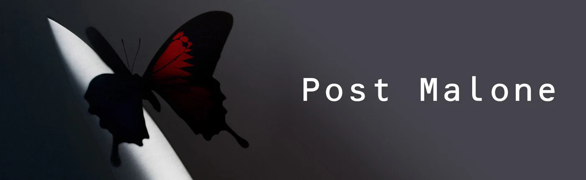

Post Malone
Post Malone es un artista estadounidense conocido por su mezcla única de rap, rock y música electrónica. Conocido por éxitos como "Circles" y "Rockstar".
Biografía
Austin Richard Post, mejor conocido como Post Malone, es un cantante, compositor y productor estadounidense nacido el 4 de julio de 1995 en Syracuse, Nueva York. Comenzó a llamar la atención en 2015 con su exitoso sencillo "White Iverson", el cual marcó el inicio de su carrera. Su estilo único combina rap, rock, pop y trap, lo que le ha permitido crear una música ecléctica que atrae a audiencias de diferentes géneros. A lo largo de los años, ha lanzado álbumes como **"Stoney"** (2016), **"Beer Bongs & Bentleys"** (2018) y **"Hollywood's Bleeding"** (2019), con canciones de gran éxito como "Rockstar", "Circles" y "Wow". Con múltiples premios en su haber, Post Malone ha logrado consolidarse como uno de los artistas más innovadores y populares de la última década, destacándose no solo por su música, sino también por sus incursiones en el mundo empresarial, como su línea de vinos Maison No. 9. Su estilo distintivo y su capacidad para mezclar influencias musicales lo han convertido en una figura influyente en la cultura pop.
Discografía

Stoney (2016)

Beer Bongs & Bentleys (2018)

Hollywood's Bleeding (2019)